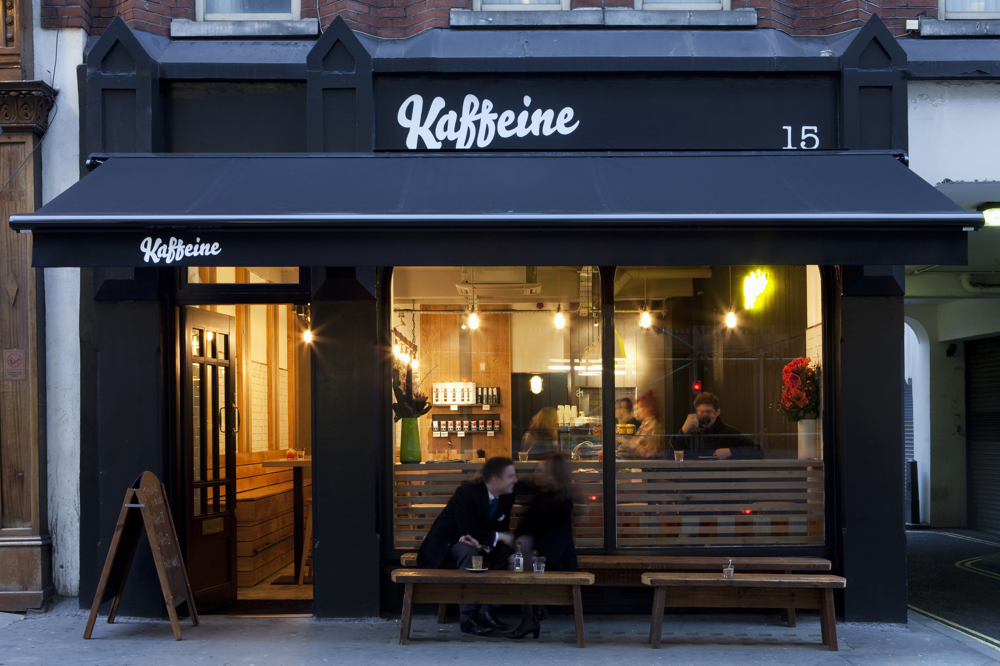

Best Cafe in the World
Kaffeine in London
Why you have to see it: Kaffeine's coffee flight will take you on a mouth trip that is out of this world. Don't drink any coffee before visiting because the flight includes a single shot of espresso, a single shot of cappuccino, and a cold-brew cascara refresher. Kaffeine's baristas must have at least three years of training before brewing behind the shop's bar, and it shows in the way they perfectly craft latte art, as seen above.